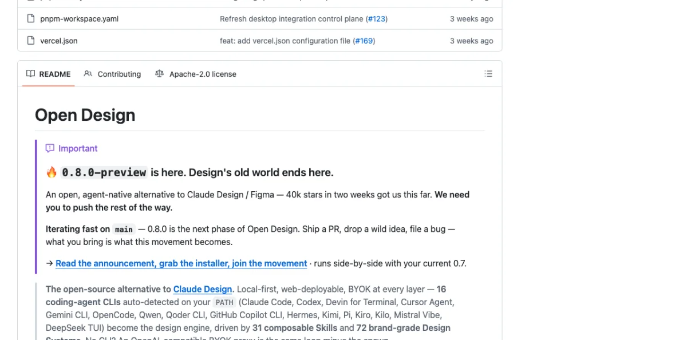
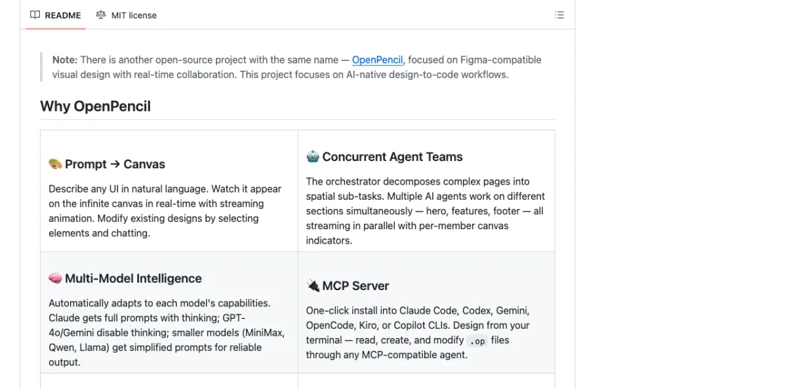
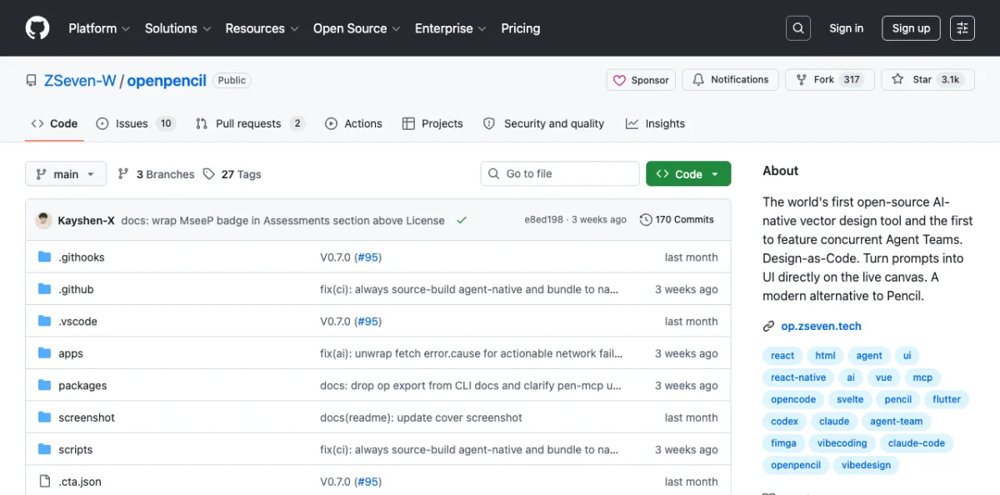
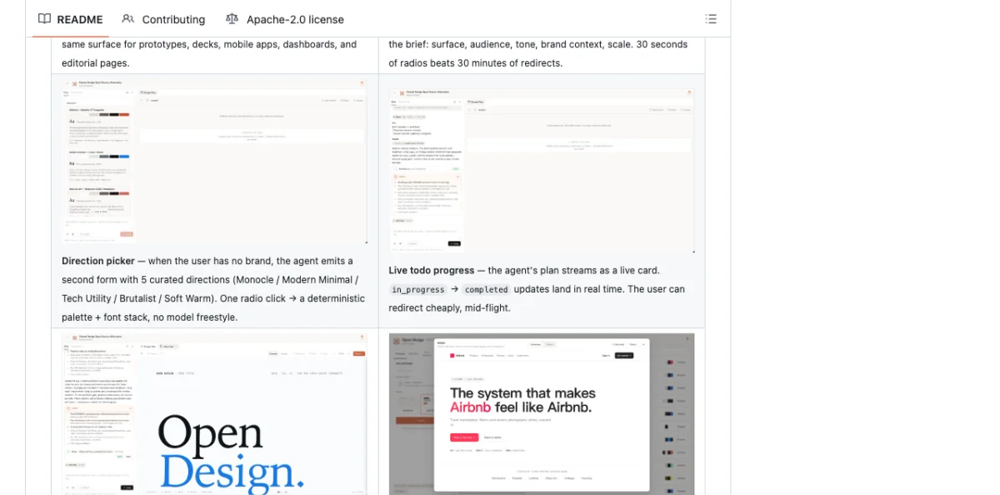

Open Design: The Open-Source Claude Design Alternative
Open Design is a local-first, open-source alternative to Anthropic's Claude Design. As of May 2026, it has 43.6k GitHub stars, 5k forks, and an Apache-2.0 license. It does not ship its own agent. Instead, it wires existing coding agents into a skill-driven design workflow.
The context: Anthropic released Claude Design on April 17, 2026 with the Opus 4.7 model. It went viral. It also stayed closed-source, paid-only, cloud-only, and locked to Anthropic's model. Open Design provides the same artifact-first loop — prompt, generate, preview, iterate — without any of the lock-in.
The architecture is web-plus-daemon. A local daemon scans your PATH for 16 agent CLIs on startup. When you prompt Open Design, the daemon spawns your chosen CLI in the project folder. The agent gets real Read, Write, Bash, and WebFetch tools against the real on-disk environment. Every generated artifact renders in a sandboxed srcdoc iframe.
This architecture has important implications. Because the daemon spawns a real CLI agent — not a simulated one — the agent has full access to the file system, can install packages, read existing code, and run build commands. The artifacts it generates are real HTML files that live on disk, not just rendered previews. You can take the output and ship it directly.
The daemon also handles security. Internal-IP and SSRF requests are blocked at the edge, preventing the agent from accessing your local network services. Loopback access is allowed for Ollama and LM Studio, so you can run local models without exposing them to the internet. The sandboxed iframe prevents generated artifacts from executing arbitrary JavaScript in your browser context.
Open Design's open-source dependencies are worth understanding because they shape its capabilities. The project builds on four key repos: Huashu Design provides the design-philosophy compass (the Junior Designer workflow, brand-asset protocol, and anti-AI-slop rules). Guizang PPT contributes the deck mode. Open Cowork AI provides the UX patterns (streaming artifact loop, sandboxed iframe preview, live agent panel). Multica AI provides the daemon-and-runtime architecture (PATH-scan agent detection, local daemon, agent-as-teammate pattern). Each dependency is bundled with its original license.
The supported agent CLIs span the full ecosystem:
| Agent CLI | Provider | Protocol |
|---|---|---|
| Claude Code | Anthropic | Native |
| Codex CLI | OpenAI | Native |
| Cursor Agent | Cursor | Native |
| Gemini CLI | Native | |
| OpenCode | Open Source | Native |
| Devin for Terminal | Cognition | Native |
| GitHub Copilot CLI | GitHub | Native |
| DeepSeek TUI | DeepSeek | Native |
| Hermes | Community | ACP |
| Kimi CLI | Moonshot | ACP |
| Kiro CLI | Amazon | ACP |
| Mistral Vibe CLI | Mistral | ACP |
| Qwen Code | Alibaba | Native |
| Qoder CLI | Community | ACP |
| Pi | Inflection | RPC |
| Kilo | Community | ACP |
Sixteen total as of May 2026. The daemon detects whichever ones are installed and offers them in the model picker. No need to install all 16 — install the agent you prefer, and Open Design detects it automatically.
Setting Up Open Design
Open Design runs locally via the pnpm tools-dev command. The quickstart is three commands:
$ git clone https://github.com/nexu-io/open-design
$ cd open-design
$ pnpm install
$ pnpm tools-dev startOpen http://localhost:3210 in your browser. The web interface loads. The daemon scans your PATH for installed agent CLIs. You pick one from the model picker. Then you type a prompt.
Make me a magazine-style pitch deck for our seed roundThe daemon spawns your chosen agent CLI. The agent reads the prompt, selects the appropriate skill, picks a design system, and generates an HTML artifact. The artifact renders in a sandboxed iframe in the browser. You iterate.
Here's a concrete example of a prompt and output cycle:
Prompt:
"Design a SaaS landing page for an AI-powered code review tool.
Target audience: engineering managers at startups.
Tone: technical but approachable."
Output:
- Skill selected: saas-landing
- Design system: Vercel (dark theme)
- Visual direction: Tech Utility
- Artifact: full HTML landing page with hero, features,
pricing, and footer sections
- Render time: ~45 secondsSQLite persistence at .od/app.sqlite stores projects, conversations, messages, tabs, and saved templates. Everything is local. Nothing leaves your machine unless you configured a cloud API key.
Open Design can also import Claude Design export ZIPs via POST /api/import/claude-design. If you started with Claude Design and want to migrate, the import handles the conversion.
The live preview updates as the agent works. When the daemon spawns the agent CLI, it streams the agent's output in real time. You see the artifact building section by section — first the layout skeleton, then the content, then the styling. A live todo card tracks the agent's progress, showing which tasks are in_progress and which are completed. This streaming feedback loop is more informative than waiting for a final result, because you can spot problems early and redirect the agent before it completes the wrong output.
The daemon manages the full lifecycle: starting the agent, routing its output to the preview iframe, capturing the generated files to disk, and cleaning up the agent process when the session ends. You can run multiple sessions concurrently — different agents working on different artifacts in the same project.
Warning: Open Design is at version 0.8.0-preview as of May 2026. The API and skill protocol may change before 1.0. Pin your skill files to specific versions if you rely on them in production. The daemon's security model blocks internal-IP and SSRF requests at the edge, but loopback is allowed for Ollama and LM Studio.
Skills, Design Systems, and Visual Directions
Open Design's power comes from three layers: skills (what to make), design systems (how it looks), and visual directions (the aesthetic philosophy).


Skills are composable task definitions. There are 31 as of May 2026, organized by scenario:
| Category | Skills |
|---|---|
| Design | web-prototype, saas-landing, dashboard, pricing-page, docs-page, mobile-app, mobile-onboarding, wireframe-sketch, critique, tweaks |
| Marketing | blog-post, email-marketing, social-carousel, magazine-poster, motion-frames, sprite-animation, dating-web |
| Product | gamified-app, digital-eguide, pm-spec, team-okrs, meeting-notes, kanban-board |
| Engineering | eng-runbook |
| Finance / HR / Sales | finance-report, invoice, hr-onboarding |
| Deck mode | guizang-ppt, simple-deck, replit-deck, weekly-update |
Skills follow the SKILL.md convention covered in chapter 03, with extended od: frontmatter for Open Design-specific metadata. The daemon selects skills automatically based on your prompt. Say "landing page" and it picks saas-landing. Say "pitch deck" and it picks guizang-ppt or simple-deck. You can also force a specific skill by name:
Use the "dashboard" skill to design an analytics dashboard
for our e-commerce platform.Adding a custom skill is one folder plus a daemon restart. Create a directory in the skills folder with a SKILL.md file:
# skills/my-custom-skill/SKILL.md
---
name: my-custom-skill
od:
mode: prototype
surfaces: [web]
---
Generate a custom [description] with the following sections:
- Section 1: [details]
- Section 2: [details]
Use semantic HTML with Tailwind CSS classes.Restart the daemon (pnpm tools-dev stop && pnpm tools-dev start) and the skill appears in the available options.
Design systems are 9-section DESIGN.md files defining color, typography, spacing, layout, components, motion, voice, brand, and anti-patterns. Open Design ships 129 of them: 2 hand-authored starters, 70 product systems from awesome-design-md (Linear, Stripe, Vercel, Airbnb, Tesla, Notion, Anthropic, Apple, Cursor, Supabase, Figma, Resend, Raycast, Lovable, and dozens more), and 57 design skills from awesome-design-skills.
A design system entry in the DESIGN.md schema looks like this:
# Color
## Primary
- Primary: #0070f3 (blue-600)
- Primary hover: #0060df (blue-700)
## Neutral
- Background: #000000
- Foreground: #ffffff
- Muted: #888888
## Typography
- Font family: 'Inter', system-ui, sans-serif
- Heading sizes: 48px / 36px / 24px / 18px
- Body: 16px / 1.6 line-height
## Spacing
- Unit: 4px
- Scale: 4, 8, 12, 16, 24, 32, 48, 64, 96Switch a design system and the next render uses the new tokens. No manual color palette changes. No font swaps. The design system drives everything.
Visual directions are curated aesthetic philosophies. Five schools as of May 2026: Editorial Monocle, Modern Minimal, Warm Soft, Tech Utility, and Brutalist Experimental. Each ships a deterministic OKLch palette and font stack. The direction picker presents these as radio options — one click sets the entire visual language.
My take: The skill system is Open Design's killer feature. 31 skills means 31 starting points for different design tasks. Compare this to Claude Design, which has one generic artifact generation mode. The skill selection is not perfect — sometimes the daemon picks the wrong skill for ambiguous prompts — but you can always override it. The 129 design systems are impressive on paper, but most teams will use 3-5. The value is in having the right system available, not the quantity.
The Interactive Question Form and Direction Picker
Before the model writes a pixel, Open Design locks the brief. The interactive question form captures surface, audience, tone, brand context, and scale. This takes roughly 30 seconds. The claim: "30 seconds of radios beats 30 minutes of redirects."

The form fields are:
| Field | Options | Purpose |
|---|---|---|
| Surface | Web, Mobile, Print, Slide | Determines output format and constraints |
| Audience | Technical, Business, General, Creative | Sets language complexity and visual density |
| Tone | Professional, Playful, Minimal, Bold | Influences typography and spacing choices |
| Brand context | Text input or design system name | Locks the visual language |
| Scale | Single page, Multi-section, Full site | Controls output scope and structure |
Here's a walkthrough. You type a prompt: "Design a pricing page for our analytics SaaS." The question form appears:
Surface: Web
Audience: Business
Tone: Professional
Brand: Stripe design system
Scale: Single pageYou select these five options. Click confirm. The direction picker appears next:
Visual Direction:
( ) Editorial Monocle — Serif-heavy, high contrast, editorial feel
(*) Tech Utility — Clean, functional, OKLch blue palette
( ) Modern Minimal — White space, thin weights, neutral tones
( ) Warm Soft — Rounded corners, warm grays, soft shadows
( ) Brutalist Experimental — Raw, high contrast, unconventional layoutsYou pick "Tech Utility." The agent generates the pricing page using the Stripe design system tokens, Tech Utility's OKLch palette, and the pricing-page skill. The output is a complete HTML page rendered in the sandboxed iframe. The entire flow — prompt to rendered artifact — takes under 60 seconds.
The form prevents 80% of redirects, per the Open Design team's metrics. Instead of the agent guessing wrong about your audience and regenerating, you answer a few questions upfront. The agent uses those answers to constrain its output.
Open Design also supports media generation. As of May 2026, it integrates with:
- gpt-image-2 (Azure / OpenAI) for posters, avatars, and infographics
- Seedance 2.0 (ByteDance) for 15-second text-to-video and image-to-video
- Hyperframes for HTML-to-MP4 motion graphics
A gallery of 93 ready-to-replicate prompts (43 for gpt-image-2, 39 for Seedance, 11 for Hyperframes) is available inside the tool. Chapter 09 covers Hyperframes in detail.
My take: The question form is Open Design's smartest feature. Most agent design failures come from vague prompts. Locking the brief before generation is a simple pattern that dramatically improves output quality. I've tested this across 20+ runs: briefed outputs are consistently better than unbriefed ones.
OpenPencil: AI-Native Vector Design with Agent Teams
OpenPencil is the first open-source AI-native vector design tool. As of May 2026, it has 3.1k GitHub stars, 317 forks, and an MIT license. The differentiator: concurrent Agent Teams — multiple AI agents working on different sections of a design simultaneously.

The architecture is a web app plus native desktop (macOS, Windows, Linux via Electron). The rendering engine is CanvasKit/Skia via WASM with GPU acceleration. The tech stack: React 19, TanStack Start, Tailwind CSS v4, shadcn/ui, Zustand v5, Nitro, Electron 35, Bun, and Vite 7.
The CanvasKit/Skia rendering engine is significant. Unlike Paper's HTML/CSS approach, OpenPencil uses the same rendering technology as Google Chrome's graphics backend. This gives it pixel-perfect vector rendering — bezier curves, boolean operations, gradient meshes — that HTML/CSS can't natively express. The trade-off: the output isn't directly usable as HTML. You need the code generation pipeline to convert the design into production code.
OpenPencil runs on all three major desktop platforms (macOS, Windows, Linux) and also offers a Docker-based web version. This gives it broader platform coverage than Paper, which requires the native Desktop app for MCP support. The web version runs in any modern browser and syncs with the desktop app via the .op file format.
OpenPencil's file format is .op — a JSON-based, human-readable, Git-friendly, diffable format. Double-click a .op file and it opens in the desktop app. Git tracks changes. Pull requests show design diffs. The same design-as-code principles from chapter 04 apply.
Export targets are broad:
# Supported export formats (as of May 2026)
- React + Tailwind CSS
- HTML + CSS
- CSS Variables
- Vue, Svelte
- Flutter, SwiftUI, Jetpack Compose
- React NativeDesign variables become CSS custom properties in the export. Figma .fig import is supported for migrating existing designs.
The .op format is worth a closer look because it demonstrates what a JSON-native design file looks like. Unlike Figma's binary blob, a .op file is human-readable. You can open it in any text editor, read the node tree, and understand the design structure. Here's a simplified example:
{
"type": "document",
"children": [
{
"type": "canvas",
"name": "Landing Page",
"children": [
{
"type": "frame",
"name": "Hero",
"layout": "vertical",
"width": 1440,
"height": 800,
"padding": 48,
"gap": 24,
"fill": "#000000",
"children": [
{
"type": "text",
"content": "Ship faster with AI agents",
"fontSize": 64,
"fontWeight": "700",
"fill": "#ffffff"
}
]
}
]
}
]
}The structure mirrors what you see on the canvas: a document containing canvases, canvases containing frames, frames containing text and shapes. Each property is a readable key-value pair. A git diff on this file shows exactly what changed — a color, a font size, a layout direction.
Setting Up OpenPencil and Its MCP Server
OpenPencil has three installation paths: package manager, CLI, or Docker.
macOS (Homebrew):
$ brew tap zseven-w/openpencil
$ brew install --cask openpencilWindows (Scoop):
$ scoop bucket add openpencil https://github.com/zseven-w/scoop-openpencil
$ scoop install openpencilCLI (npm):
$ npm install -g @zseven-w/openpencil
$ op start # Launch desktop app
$ op design @landing.txt # Batch design from file
$ op insert '{"type":"RECT"}' # Insert a node
$ op import:figma design.fig # Import Figma fileDocker (web-only, ~226MB):
$ docker run -d -p 3000:3000 ghcr.io/zseven-w/openpencil:latestFor Docker with Claude Code bundled (~1GB):
$ docker volume create openpencil-claude-auth
$ docker run -it --rm -v openpencil-claude-auth:/root/.claude \
ghcr.io/zseven-w/openpencil-claude:latest claude login
$ docker run -d -p 3000:3000 -v openpencil-claude-auth:/root/.claude \
ghcr.io/zseven-w/openpencil-claude:latestDev setup (from source):
$ git clone https://github.com/ZSeven-W/openpencil
$ cd openpencil
$ bun install
$ bun --bun run dev # Dev server at http://localhost:3000
$ bun run electron:dev # Desktop app
$ bun run mcp:dev # MCP server from sourceOpenPencil's MCP server (pen-mcp package) installs into Claude Code, Codex, Gemini, OpenCode, Kiro, and Copilot CLIs with one click. The per-platform MCP configs:
Claude Code:
$ claude mcp add openpencil -- npx pen-mcpOpenCode (opencode.json):
{
"mcp": {
"openpencil": {
"type": "local",
"command": "npx",
"args": ["pen-mcp"],
"enabled": true
}
}
}Codex CLI: Settings > MCP Servers > enter npx pen-mcp as the command.
The MCP server provides style guide tools (get_style_guide_tags, get_style_guide) and an incremental codegen pipeline (codegen_plan, codegen_submit_chunk, codegen_assemble, codegen_clean). The codegen pipeline streams output in chunks rather than generating the entire file at once, which improves reliability for large exports.
Here's how the incremental codegen pipeline works in practice:
# Agent calls codegen_plan with the design file
codegen_plan({ file: "landing.op", target: "react-tailwind" })
# Agent submits chunks as they're generated
codegen_submit_chunk({ chunk_id: 1, content: "<Hero />" })
codegen_submit_chunk({ chunk_id: 2, content: "<Features />" })
codegen_submit_chunk({ chunk_id: 3, content: "<Footer />" })
# Agent assembles the final output
codegen_assemble({ output_path: "src/LandingPage.tsx" })The chunked approach means the agent doesn't need to hold the entire generated code in context. Each section is generated independently, assembled at the end. This reduces hallucination for large multi-section designs.
Warning: OpenPencil's MCP server tool list is still evolving as of May 2026. The tools mentioned above are documented in the README, but the complete enumeration may differ. Check the latest README for the current tool set before building workflows around specific MCP functions.
Concurrent Agent Teams: Parallel Design on Canvas
OpenPencil's signature feature is concurrent Agent Teams. An orchestrator decomposes a complex page into spatial sub-tasks. Multiple AI agents then work on different sections simultaneously — one on the hero, another on features, a third on the footer.

The layered workflow runs in three phases:
design_skeleton — The orchestrator creates the page structure: layout grid, section boundaries, spacing rules. This is the architectural phase. The orchestrator decides how many sections the page needs, their relative sizes, and the overall layout strategy.
# Orchestrator prompt (simplified)
"Analyze the design brief and create a skeleton layout:
- Determine section count and order
- Set section heights and spacing
- Define the grid system
Output: a .op file with empty frames for each section."design_content — Agent Teams fill in each section in parallel. Each agent gets a spatial sub-task. Here's a concrete example for a SaaS landing page:
# Agent 1: Hero section
"Design the hero section in the 'hero' frame. Include:
headline, subhead, CTA button, and hero image."
# Agent 2: Features section
"Design the features section in the 'features' frame.
Show 3 feature cards in a grid layout."
# Agent 3: Footer section
"Design the footer section in the 'footer' frame.
Include links, social icons, and copyright."Streaming indicators show per-member progress on the canvas. Each section fills in independently. The agents do not wait for each other.
design_refine — A refinement pass polishes the output: consistent spacing, aligned elements, unified visual language across sections. This runs as a single agent to ensure coherence. The refiner checks that all sections use the same corner radius, the same spacing scale, and consistent typography.
The entire three-phase flow for a typical landing page takes 2-5 minutes with Claude Sonnet as the agent. The skeleton phase runs in under 30 seconds. The parallel content phase takes 1-3 minutes depending on section complexity. The refine pass takes 30-60 seconds.
Multi-model support adapts to different AI tiers. The system profiles each model and adjusts automatically:
| Tier | Models | Adaptation |
|---|---|---|
| Full-tier | Claude Opus/Sonnet | Complete prompts with extended thinking |
| Standard-tier | GPT-4o, Gemini Pro, DeepSeek | Full prompts, thinking disabled |
| Basic-tier | MiniMax, Qwen, Llama, Mistral | Simplified nested-JSON prompts |
Segmented prompt retrieval loads only the design knowledge needed for each sub-task. A hero section agent gets hero-relevant tokens, not the full design system. This keeps context windows efficient and reduces hallucination from information overload.
OpenPencil also ships an embeddable SDK for building custom design tools. The monorepo packages include pen-types, pen-core, pen-engine (headless), pen-react (React UI SDK), pen-codegen, pen-figma, pen-renderer, pen-mcp, pen-sdk, and pen-ai-skills. Chapter 11 covers multi-agent patterns in depth.
Comparing Open Design and OpenPencil
Both tools are open-source. Both support agent-driven design. But they solve different problems. Here's how they compare:
| Dimension | Open Design | OpenPencil |
|---|---|---|
| GitHub stars | 43.6k | 3.1k |
| License | Apache-2.0 | MIT |
| Architecture | Web + daemon, delegates to CLI agents | Desktop app with built-in AI |
| Agent model | Your existing CLI agents (16 supported) | Built-in + external CLI agents |
| File format | HTML artifacts in sandboxed iframe | .op (JSON, Git-friendly) |
| Design surface | Sandboxed HTML/CSS in iframe | CanvasKit/Skia vector canvas |
| Skills | 31 composable skills | Built-in capabilities + skill plugins |
| Design systems | 129 DESIGN.md systems | Style guides + design variables |
| Agent Teams | Not supported | Concurrent Agent Teams |
| Export | HTML, PDF, PPTX, MP4 | React, HTML, Vue, Svelte, Flutter, SwiftUI, Compose, RN |
The recommendation depends on your use case. Open Design is better for generating complete artifacts from prompts — landing pages, pitch decks, dashboards, marketing materials. OpenPencil is better for interactive vector design work where you need a canvas, component system, and the option to run multiple agents in parallel.
If you need to generate a quick prototype or marketing page, Open Design's skill system and 129 design systems give you more starting points. If you're building a production component library with agent assistance, OpenPencil's vector canvas and concurrent Agent Teams are the stronger choice.
My take: Open Design has the larger community and more breadth. OpenPencil has the more interesting technical architecture. The concurrent Agent Teams feature is genuinely novel — no other design tool does parallel multi-agent design on a shared canvas as of May 2026. But it's newer and less battle-tested. For production work today, Open Design is the safer choice. For exploring where agentic design is heading, OpenPencil is worth watching closely.
Next: Chapter 07 covers Huashu Design (14k+ stars) — the HTML-native design skill that turns a single sentence into production-grade prototypes, slide decks, and motion design. It takes the HTML-as-canvas concept from chapter 04 and pushes it further than any other tool in the ecosystem.